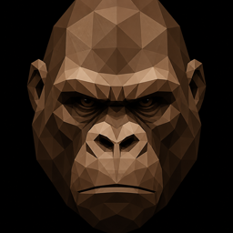

Connect
Talk to BoreDefi. No server, no vault sync — this page only asks the wallet for a public address, the current network, and an optional test signature.
Status
Not connected
Wallet
BoreDefi
Address
—
Network
—
Balance
—
Prefer BoreDefi in the in-app Browser, WalletConnect QR, or the Chrome extension.
In the wallet: Browser tab → Connect bookmark, or Settings → WalletConnect to scan this QR. Extension users unlock the popup first. Wallet preview stays at /BoreDefi-wallet/.